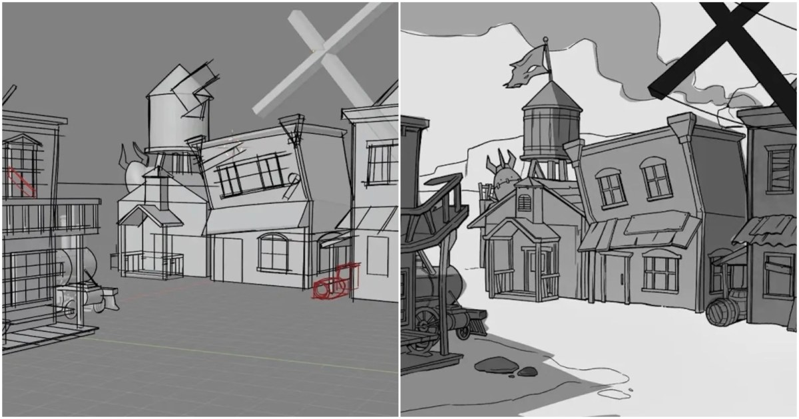

01
Blender 輔助背景概念設計：從西部場景 Blockout 到 2D 完稿
概念藝術家 Ullaiin 示範先在 Blender 建立西部風格環境 Blockout，再繪製並整理成 2D 完稿；流程用三維空間協助背景透視與空間關係判斷。

Blender
★★★★☆
完整分析
三維轉二維技術流程
示範先在 Blender 建立西部風格環境 Blockout，之後進入繪製階段並轉成完成的 2D 圖像，讓構圖與透視先有可調整的空間基礎。
背景設計製作影響
來源指出，把三維工具納入二維流程可協助理解透視與物件間的空間關係，也能降低從空白畫面直接建構環境的難度。
入門門檻與資訊限制
Blender 免費且教學資源多，但介面與大量快捷鍵仍可能讓新手不知從何開始；正文只概述影片內容，沒有提供速度比較或可量化成效。
BRIEF｜來源已驗證；證據深度較有限，完整分析會明確區分已知資訊與待驗證事項。